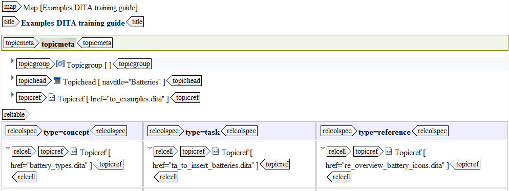

---
# Generated from DITA source
layout: default
title: "Main components of a DITA map"
index: "../toc.html"
---
Main components of a DITA map
Component list
The following components are most commonly used in a DITA map:
Component
Purpose
Title
In this element you can enter a title for your DITA map.
Topic reference (topicref)
This element links to a topic or another DITA map. Topic references can be nested, creating the hierarchy of your map.
Topic group (topicgroup)
This element groups your topics without affecting their hierarchy. You can use this component to, for instance, set attribute values for a group of topics that do not have a common parent topicref. This way you can group them to give them a shared attribute, without it affecting the hierarchy.
Topic heading (topichead)
This element groups your topic within the hierarchy.
Topic meta (topicmeta)
This element contains metadata for the topic that applies specifically to the context of the publication defined by the ditamap.
Note: Text in metadata cannot be seen by the reader, only by the writer.
Relationship table (reltable)
This element specifies relationships between your topics, linking them outside of the relationships defined by the hierarchy.
Example
The following image shows the main parts a DITA map can contain:
